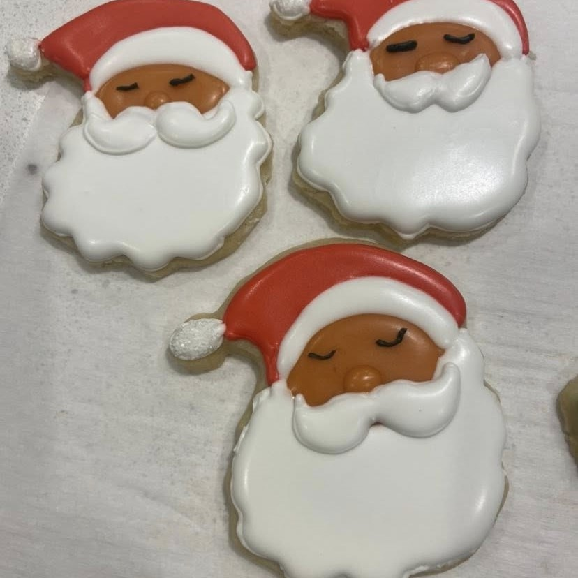

<!DOCTYPE html>
<html lang="en">
<head>
    <meta charset="UTF-8">
    <meta name="viewport" content="width=device-width, initial-scale=1.0">
    <title>About | Elizabeth's Baked Goods</title>
    <link rel="stylesheet" href="/style.css?v=20260111x3">
    <link rel="stylesheet" href="https://cdnjs.cloudflare.com/ajax/libs/font-awesome/6.4.0/css/all.min.css">
    <script src="/cookie-consent.js"></script>
    <link href="https://fonts.googleapis.com/css2?family=Poppins:wght@300;400;600&family=Dancing+Script:wght@400;700&display=swap" rel="stylesheet">
    <meta name="description" content="Learn the story behind Elizabeth's Baked Goods — a home-grown bakery creating premium handmade treats in Texas.">
    <script async src="https://pagead2.googlesyndication.com/pagead/js/adsbygoogle.js?client=ca-pub-9289301430903450"
         crossorigin="anonymous"></script>
    <script type="application/ld+json">
    {
      "@context": "https://schema.org",
      "@type": "FAQPage",
      "mainEntity": [
        {
          "@type": "Question",
          "name": "How do I place a custom order?",
          "acceptedAnswer": {
            "@type": "Answer",
            "text": "Custom orders can be requested through our order page or by contacting us directly. We work with customers to create desserts tailored to their event, preferences, and timeline."
          }
        },
        {
          "@type": "Question",
          "name": "Which areas do you serve?",
          "acceptedAnswer": {
            "@type": "Answer",
            "text": "Elizabeth's Baked Goods is based in Rosenberg, Texas. Local pickup and delivery may be available, and select custom orders can be fulfilled for customers across the United States."
          }
        },
        {
          "@type": "Question",
          "name": "What makes your desserts special?",
          "acceptedAnswer": {
            "@type": "Answer",
            "text": "All desserts are handcrafted in small batches using quality ingredients, thoughtful flavor combinations, and attention to detail. Each order is made with care to create a memorable experience."
          }
        }
      ]
    }
</head>
<body class="site-bg">
    <!-- Mobile Header -->
    <div class="mobile-header">
      
      <button class="hamburger" aria-label="Menu">☰</button>
      <nav class="mobile-nav">
        <a href="index.html">Home</a>
        <a href="about.html">About</a>
        <a href="blog.html">Blogs</a>
        <a href="recipes.html">Recipes</a>
        <a href="order.html">Order</a>
        <a href="local-ordering.html">Custom Orders</a>
        <a href="designs.html">Designs</a>
        <a href="contact.html">Contact</a>
        <a href="policies.html">Policies</a>
      </nav>
    </div>

    <!-- DESKTOP NAVBAR - OLD -->
    <div id="header-placeholder"></div>
        <article class="section" style="max-width: 1100px; margin: 0 auto; padding: 2rem;">
            <!-- Main Content with Small Photo on Right -->
            <div style="display: flex; gap: 2rem; margin-bottom: 3rem;">
                <div style="flex: 1; min-width: 0;">
                    <h1 style="font-family: 'Dancing Script', cursive; color: #8b4513; font-size: 3rem; margin-bottom: 1rem;">About Elizabeth's Baked Goods</h1>
                    <p style="font-size: 1.2rem; color: #666; margin-bottom: 2rem;">Welcome to Elizabeth's Baked Goods! 🍰</p>

                    <div style="background: #f9f5f0; padding: 1.5rem; border-radius: 10px; margin-bottom: 2rem;">
                        <h2 style="font-family: 'Dancing Script', cursive; color: #8b4513; font-size: 1.8rem; margin-top: 0; margin-bottom: 1rem;">Handcrafted Desserts in Rosenberg, Texas</h2>
                        <p style="margin: 0; color: #4d2c2a; line-height: 1.7;">Elizabeth's Baked Goods is based in Rosenberg, Texas, creating handcrafted desserts for local customers and custom orders nationwide. From small celebrations to large events, every dessert is made with care, creativity, and high-quality ingredients.</p>
                    </div>

                    <div class="card-soft" style="line-height: 1.8; font-size: 1rem;">
                <p>Hi, I'm Elizabeth, the hands, heart, and soul behind every treat you see here. Baking has been my passion for as long as I can remember — from the first time I carefully stirred sugar into butter in my childhood kitchen to the countless hours I've spent creating custom desserts for friends, family, and now the wonderful community here in Texas.</p>

                <p>I started Elizabeth's Baked Goods because I wanted to share more than just desserts — I wanted to share joy, comfort, creativity, and a little bit of magic in every bite. Every cookie, cake pop, brownie, and special treat you see here is made with love, attention to detail, and a dedication to quality ingredients, because I truly believe that desserts are more than food — they're experiences. They mark celebrations, comfort during hard days, small acts of kindness, and the moments we share with people we love.</p>

                <h2 style="font-family: 'Dancing Script', cursive; color: #8b4513; font-size: 2.2rem; margin-top: 2.5rem; margin-bottom: 1rem;">My Baking Journey 🕒</h2>

                <p>My journey into baking and culinary arts has been a winding path filled with lessons, discoveries, and moments of inspiration that shaped who I am as a baker today. It all began in my early years, when I found myself fascinated by the way simple ingredients could transform into something extraordinary. I remember vividly the first time I baked cookies from scratch. I measured the flour with precision, carefully folded in the chocolate chips, and watched as the dough slowly transformed in the oven into something golden and fragrant. That moment — the smell, the taste, and the joy of sharing it with my family — sparked a lifelong love of baking.</p>

                <p>When I decided to pursue formal training, I enrolled in culinary school. That experience was eye-opening in every way. I learned not only the technical skills of baking — measuring, mixing, whipping, folding, and baking with precision — but also the importance of discipline, patience, and creativity. Culinary school gave me the tools to experiment with flavors, textures, and techniques that I could never have learned on my own. I discovered the art behind pastries, the science behind perfect cookies, and the joy of crafting desserts that delighted both the eye and the palate.</p>

                <p>After school, life took me in a different direction for a while. I worked in preschools for several years. While it may not seem directly connected to baking, this experience was deeply formative. Working with children taught me patience, creativity, adaptability, and joy in the small things. I learned how to think on my feet, to be present in the moment, and to find delight in everyday interactions. These lessons are now deeply woven into my baking philosophy — from the playful design of cake pops to the small, thoughtful touches I add to every dessert I create.</p>

                <p>Eventually, my heart led me back to Texas, where I felt a deep pull to turn my passion for baking into a business that could share happiness with others. And so, Elizabeth's Baked Goods was born. Since then, I've poured my energy, creativity, and love into each treat, constantly learning and growing as a baker and business owner.</p>

                <h2 style="font-family: 'Dancing Script', cursive; color: #8b4513; font-size: 2.2rem; margin-top: 2.5rem; margin-bottom: 1rem;">How Houston Shaped My Baking 🌆</h2>

                <p>Houston is a city of incredible diversity, creativity, and flavor, and living here has profoundly shaped the way I approach baking. From its vibrant food markets to its mix of cultures, Houston is a city that constantly inspires me to experiment, innovate, and explore. I've learned that the best desserts often come from blending traditions, flavors, and textures from different culinary worlds.</p>

                <p>In Houston, I discovered a fascination with fusion flavors. I love taking classic southern desserts — like buttery pound cakes, chocolate chip cookies, or pecan pies — and adding unexpected twists inspired by international cuisines. Maybe it's a tropical fruit that adds a bright, fresh note to a classic chocolate dessert, or a hint of warm spice that elevates a traditional cookie into something unforgettable. Houston taught me that desserts don't have to be one thing — they can be a story, a journey, and a celebration all at once.</p>

                <p>The city's incredible food markets have also been a playground for my creativity. I've spent countless mornings wandering through farmers' markets, local grocery stores, and specialty shops, searching for the freshest ingredients and the most unique flavors. Each new discovery — from a rare chocolate to a perfectly ripe fruit — is an opportunity to experiment and create something new and exciting. Houston's festivals and food events have been equally inspiring, showing me that people love desserts that surprise them, delight them, and make them feel special.</p>

                <h2 style="font-family: 'Dancing Script', cursive; color: #8b4513; font-size: 2.2rem; margin-top: 2.5rem; margin-bottom: 1rem;">Baking Philosophy & Values 💖</h2>

                <p>At Elizabeth's Baked Goods, I believe that desserts are more than just sweets — they are expressions of joy, creativity, and care. Every item I make is crafted with intentionality:</p>

                <ul style="margin-left: 2rem; line-height: 2; margin-bottom: 1.5rem;">
                    <li><strong>Freshness and quality</strong> are my top priorities. Every batch is handmade in small quantities, ensuring that every bite is perfect.</li>
                    <li><strong>Creativity and innovation</strong> guide my flavor combinations and designs. I love experimenting with new techniques, colors, and tastes to create desserts that are both beautiful and memorable.</li>
                    <li><strong>Connection and joy</strong> are the heart of everything I do. Baking is about bringing people together, celebrating life's moments, and sharing happiness in a tangible, delicious way.</li>
                </ul>

                <p>I also believe in making desserts accessible and inclusive. Whether it's a birthday party, a family gathering, a corporate event, or just a small treat for yourself, my goal is to craft desserts that delight everyone and leave a lasting impression.</p>

                <h2 style="font-family: 'Dancing Script', cursive; color: #8b4513; font-size: 2.2rem; margin-top: 2.5rem; margin-bottom: 1rem;">Fun Facts About Me & Inspirations ✨</h2>

                <p>Here are some little insights into who I am and what inspires my creations:</p>

                <ul style="margin-left: 2rem; line-height: 2; margin-bottom: 1.5rem;">
                    <li>🌶 <strong>Fusion Explorer:</strong> I love experimenting with global flavors, like combining southern classics with tropical fruits or spices from around the world.</li>
                    <li>🍫 <strong>Ingredient Hunter:</strong> Houston's markets and specialty shops are my playground — I can spend hours discovering the perfect chocolate, fruit, or spice.</li>
                    <li>🎨 <strong>Creative Play:</strong> Some of my most popular creations started as experiments inspired by children's drawings, color palettes, or seasonal themes.</li>
                    <li>🍪 <strong>Favorite Ingredient:</strong> I adore working with spices like cinnamon, cardamom, and ginger — they add warmth and depth to every dessert.</li>
                    <li>🎂 <strong>Community-Inspired Creations:</strong> I often craft desserts based on customer stories, requests, or celebrations — turning your ideas into edible works of art.</li>
                    <li>☀️ <strong>Seasonal Love:</strong> I embrace seasonal flavors and colors, making every dessert feel fresh, timely, and connected to the world around us.</li>
                    <li>🫶 <strong>Personal Touch:</strong> Every treat is designed to bring a smile, evoke nostalgia, or create a memory — because desserts are about feelings as much as flavors.</li>
                </ul>

                <h2 style="font-family: 'Dancing Script', cursive; color: #8b4513; font-size: 2.2rem; margin-top: 2.5rem; margin-bottom: 1rem;">My Community & Giving Back ❤️</h2>

                <p>One of the things I love most about running Elizabeth's Baked Goods is being able to connect with my community. From school fundraisers to local events and holiday markets, I've had the joy of sharing desserts with neighbors, friends, and families across Houston. These experiences remind me every day why I started this business — to create moments of happiness, celebrate life's milestones, and contribute something positive to the people around me.</p>

                <p>I also love supporting local farmers, suppliers, and artisans, sourcing ingredients and products that uphold the same quality and integrity that I value in my desserts. Houston's food scene is vibrant, diverse, and collaborative, and I'm proud to be a part of it.</p>

                <h2 style="font-family: 'Dancing Script', cursive; color: #8b4513; font-size: 2.2rem; margin-top: 2.5rem; margin-bottom: 1rem;">Your Experience with Elizabeth's Baked Goods 🫶</h2>

                <p>When you order from Elizabeth's Baked Goods, you're not just receiving a dessert — you're getting:</p>

                <ul style="margin-left: 2rem; line-height: 2; margin-bottom: 1.5rem;">
                    <li>Handcrafted quality made with care and attention to every detail.</li>
                    <li>Unique flavors and combinations inspired by global tastes and local ingredients.</li>
                    <li>A joyful experience that can make any occasion feel special.</li>
                    <li>Personalization and creativity — your ideas and requests are welcome!</li>
                </ul>

                <p>I love hearing from customers about how a dessert brightened their day, completed a celebration, or became the highlight of an event. These stories inspire me to keep baking, experimenting, and sharing my creations with the world.</p>

                <h2 style="font-family: 'Dancing Script', cursive; color: #8b4513; font-size: 2.2rem; margin-top: 2.5rem; margin-bottom: 1rem;">Thank You for Visiting! 💌</h2>

                <p>I hope Elizabeth's Baked Goods brings a little extra happiness to your day. Whether it's a birthday, anniversary, holiday, or a simple treat just for yourself, every dessert is made with the same care, creativity, and joy that inspired me to start this business.</p>

                <p style="margin-top: 1.5rem; margin-bottom: 1.5rem;"><strong>Ready to try something delicious? 🍰<br>Explore our menu, place a custom order, or share your dessert ideas — I can't wait to bring your sweet vision to life! Let's create something unforgettable together.</strong></p>
                    </div>
                </div>

                <!-- Small Photo and Recommended Blogs on Right -->
                <div style="flex: 0 0 220px;">
                    <!-- Follow Me Buttons -->
                    <div style="background: #f9f5f0; padding: 1.2rem; border-radius: 10px; text-align: center; margin-bottom: 1.5rem;">
                        <p style="font-family: 'Dancing Script', cursive; color: #8b4513; font-size: 1.1rem; margin: 0 0 1rem 0; font-weight: 600;">Follow Me</p>
                        <div style="display: flex; justify-content: center; gap: 15px;">
                            <a href="https://www.instagram.com/elizabethsbakedgoodss?igsh=MTh4ZnVvOHBoOHMwbA%3D%3D&utm_source=qr" target="_blank" rel="noopener noreferrer" title="Instagram" style="font-size: 1.8rem; color: #d93535; text-decoration: none; transition: color 0.3s ease;" onmouseover="this.style.color='#b72a2a'" onmouseout="this.style.color='#d93535'">
                                <i class="fab fa-instagram"></i>
                            </a>
                            <a href="https://www.facebook.com/share/1anTwZmPpf/?mibextid=wwXIfr" target="_blank" rel="noopener noreferrer" title="Facebook" style="font-size: 1.8rem; color: #d93535; text-decoration: none; transition: color 0.3s ease;" onmouseover="this.style.color='#b72a2a'" onmouseout="this.style.color='#d93535'">
                                <i class="fab fa-facebook"></i>
                            </a>
                            <a href="https://www.pinterest.com/Elizabethsbakedgoods/" target="_blank" rel="noopener noreferrer" title="Pinterest" style="font-size: 1.8rem; color: #d93535; text-decoration: none; transition: color 0.3s ease;" onmouseover="this.style.color='#b72a2a'" onmouseout="this.style.color='#d93535'">
                                <i class="fab fa-pinterest"></i>
                            </a>
                        </div>
                    </div>

                    
                    
                    <div style="background: #f9f5f0; padding: 1rem; border-radius: 10px;">
                        <h3 style="font-family: 'Dancing Script', cursive; color: #8b4513; font-size: 1.2rem; margin: 0 0 1rem 0; text-align: center;">Recommended Blogs</h3>
                        <div style="display: flex; flex-direction: column; gap: 0.8rem;">
                            <div style="border-bottom: 1px solid #e8d4c8; padding-bottom: 0.8rem;">
                                <a href="blog/moving-to-houston-helped-me-rediscover-food.html" style="color: #4d2c2a; text-decoration: none; font-size: 0.85rem; font-weight: 600; display: block; line-height: 1.3;">Moving to Houston Helped Me Rediscover Food</a>
                            </div>
                            <div style="border-bottom: 1px solid #e8d4c8; padding-bottom: 0.8rem;">
                                <a href="blog/how-i-create-my-holiday-recipes.html" style="color: #4d2c2a; text-decoration: none; font-size: 0.85rem; font-weight: 600; display: block; line-height: 1.3;">How I Create My Holiday Recipes</a>
                            </div>
                            <div>
                                <a href="blog/behind-the-scenes-holiday-boxes.html" style="color: #4d2c2a; text-decoration: none; font-size: 0.85rem; font-weight: 600; display: block; line-height: 1.3;">Behind the Scenes: Holiday Boxes</a>
                            </div>
                        </div>
                    </div>
                </div>
            </div>

            <div style="margin-top: 3rem; text-align: center; margin-bottom: 4rem;">
                <a href="index.html" style="color: #8b4513; text-decoration: none; font-weight: 600; font-size: 1.05rem;">← Back to Home</a>
            </div>

            <!-- Testimonials Section -->
            <div style="margin-bottom: 3rem; padding: 2rem; background: #f9f5f0; border-radius: 15px; border-left: 5px solid #d93535;">
                <h2 style="font-family: 'Dancing Script', cursive; color: #8b4513; font-size: 2.2rem; margin-bottom: 2rem; text-align: center;">What Our Customers Are Saying</h2>
                <div style="max-width: 900px; margin: 0 auto;">
                    <p style="font-size: 1.05rem; font-style: italic; color: #4d2c2a; text-align: center; margin-bottom: 1.5rem; line-height: 1.7;">&quot;Absolutely delicious and beautifully made. You can taste the care in every bite.&quot;</p>
                    <p style="font-size: 1.05rem; font-style: italic; color: #4d2c2a; text-align: center; margin-bottom: 1.5rem; line-height: 1.7;">&quot;Elizabeth's desserts were the highlight of our event — everyone kept asking where they came from!&quot;</p>
                    <p style="font-size: 1.05rem; font-style: italic; color: #4d2c2a; text-align: center; line-height: 1.7;">&quot;From ordering to pickup, everything was easy and professional. Highly recommend!&quot;</p>
                </div>
            </div>

            <!-- Featured Recipes Section at Bottom -->
            <div style="margin-bottom: 3rem; padding: 2rem; background: #f9f5f0; border-radius: 15px;">
                <h2 style="font-family: 'Dancing Script', cursive; color: #8b4513; font-size: 2.2rem; margin-bottom: 2rem; text-align: center;">Featured Recipes</h2>
                <div style="display: grid; grid-template-columns: repeat(auto-fit, minmax(250px, 1fr)); gap: 2rem;">
                    <div style="text-align: center;">
                        <a href="recipes/classic-sugar-cookies.html">
                            
                            <div style="color: #8b4513; text-decoration: underline; font-size: 1.1rem; font-weight: 600;">Sugar Cookies</div>
                            <a href="recipes/classic-sugar-cookies.html" style="color: #8b4513; text-decoration: underline; font-weight: 600; font-size: 0.9rem; display: inline-block; margin-top: 0.5rem;">View Recipe →</a>
                        </a>
                    </div>
                    <div style="text-align: center;">
                        <a href="recipes/ultimate-fudgy-brownies.html">
                            
                            <div style="color: #8b4513; text-decoration: underline; font-size: 1.1rem; font-weight: 600;">Fudgy Brownies</div>
                            <a href="recipes/ultimate-fudgy-brownies.html" style="color: #8b4513; text-decoration: underline; font-weight: 600; font-size: 0.9rem; display: inline-block; margin-top: 0.5rem;">View Recipe →</a>
                        </a>
                    </div>
                    <div style="text-align: center;">
                        <a href="recipes/classic-french-macarons.html">
                            
                            <div style="color: #8b4513; text-decoration: underline; font-size: 1.1rem; font-weight: 600;">French Macarons</div>
                            <a href="recipes/classic-french-macarons.html" style="color: #8b4513; text-decoration: underline; font-weight: 600; font-size: 0.9rem; display: inline-block; margin-top: 0.5rem;">View Recipe →</a>
                        </a>
                    </div>
                </div>
                <div style="text-align: center; margin-top: 2rem;">
                    <a href="local-ordering.html" style="display: inline-block; padding: 1rem 2rem; background: #8b4513; color: white; text-decoration: none; border-radius: 8px; font-size: 1.05rem; font-weight: 600;">Order Your Treats</a>
                </div>
            </div>

            <!-- Blog Section at Bottom -->
            <div style="margin-bottom: 3rem;">
                <h2 style="font-family: 'Dancing Script', cursive; color: #8b4513; font-size: 2.2rem; margin-bottom: 2rem; text-align: center;">Read My Blog</h2>
                <div style="display: grid; grid-template-columns: repeat(auto-fit, minmax(280px, 1fr)); gap: 2rem;">
                    <div style="background: #f9f5f0; padding: 1.5rem; border-radius: 10px; box-shadow: 0 2px 8px rgba(0,0,0,0.05);">
                        <h4 style="font-family: 'Playfair Display', serif; color: #4d2c2a; font-size: 1.1rem; margin: 0 0 0.5rem 0;"><a href="blog/moving-to-houston-helped-me-rediscover-food.html" style="color: #4d2c2a; text-decoration: none;">Moving to Houston Helped Me Rediscover Food</a></h4>
                        <p style="color: #666; font-size: 0.95rem; line-height: 1.6; margin: 0 0 1rem 0;">Learn how moving to Houston inspired my creative approach to baking and flavor innovation.</p>
                        <a href="blog/moving-to-houston-helped-me-rediscover-food.html" style="color: #8b4513; text-decoration: underline; font-weight: 600; font-size: 0.9rem;">Read →</a>
                    </div>
                    <div style="background: #f9f5f0; padding: 1.5rem; border-radius: 10px; box-shadow: 0 2px 8px rgba(0,0,0,0.05);">
                        <h4 style="font-family: 'Playfair Display', serif; color: #4d2c2a; font-size: 1.1rem; margin: 0 0 0.5rem 0;"><a href="blog/how-i-create-my-holiday-recipes.html" style="color: #4d2c2a; text-decoration: none;">How I Create My Holiday Recipes</a></h4>
                        <p style="color: #666; font-size: 0.95rem; line-height: 1.6; margin: 0 0 1rem 0;">Discover my process for developing unique and delicious holiday treats that bring joy.</p>
                        <a href="blog/how-i-create-my-holiday-recipes.html" style="color: #8b4513; text-decoration: underline; font-weight: 600; font-size: 0.9rem;">Read →</a>
                    </div>
                    <div style="background: #f9f5f0; padding: 1.5rem; border-radius: 10px; box-shadow: 0 2px 8px rgba(0,0,0,0.05);">
                        <h4 style="font-family: 'Playfair Display', serif; color: #4d2c2a; font-size: 1.1rem; margin: 0 0 0.5rem 0;"><a href="blog/behind-the-scenes-holiday-boxes.html" style="color: #4d2c2a; text-decoration: none;">Behind the Scenes: How I Make Holiday Boxes</a></h4>
                        <p style="color: #666; font-size: 0.95rem; line-height: 1.6; margin: 0 0 1rem 0;">Get an inside look at my complete holiday box process and the care behind every treat.</p>
                        <a href="blog/behind-the-scenes-holiday-boxes.html" style="color: #8b4513; text-decoration: underline; font-weight: 600; font-size: 0.9rem;">Read →</a>
                    </div>
                </div>
            </div>

            <!-- Frequently Asked Questions Section -->
            <div style="margin-top: 4rem; padding: 2rem; background: #f9f5f0; border-radius: 15px;">
                <h2 style="font-family: 'Dancing Script', cursive; color: #8b4513; font-size: 2.2rem; margin-bottom: 2rem; text-align: center;">Frequently Asked Questions</h2>
                
                <div style="max-width: 900px; margin: 0 auto;">
                    <div style="margin-bottom: 2rem;">
                        <p style="font-size: 1.1rem; color: #4d2c2a; margin: 0 0 0.8rem 0;"><strong>How do I place a custom order?</strong></p>
                        <p style="color: #4d2c2a; line-height: 1.7; margin: 0;">Custom orders can be requested through our <a href="/local-ordering.html" style="color: #8b4513; text-decoration: underline;">order page</a> or by <a href="/contact.html" style="color: #8b4513; text-decoration: underline;">contacting us</a> directly. We'll work with you to create something perfect for your occasion.</p>
                    </div>
                    
                    <div style="margin-bottom: 2rem;">
                        <p style="font-size: 1.1rem; color: #4d2c2a; margin: 0 0 0.8rem 0;"><strong>Which areas do you serve?</strong></p>
                        <p style="color: #4d2c2a; line-height: 1.7; margin: 0;">We are proudly based in Rosenberg, TX and offer local pickup and delivery when available. Custom dessert orders may also be available for customers across the United States.</p>
                    </div>
                    
                    <div>
                        <p style="font-size: 1.1rem; color: #4d2c2a; margin: 0 0 0.8rem 0;"><strong>What makes your desserts special?</strong></p>
                        <p style="color: #4d2c2a; line-height: 1.7; margin: 0;">Every dessert is handcrafted in small batches using quality ingredients, thoughtful flavor combinations, and attention to detail. Our goal is to create desserts that feel personal, comforting, and memorable.</p>
                    </div>
                </div>
            </div>
        </article>
    </main>

    <footer>
        <p>&copy; 2025 Elizabeth's Baked Goods | <a href="privacy-policy.html" style="color: inherit; text-decoration: underline;">Privacy Policy</a> • <a href="terms-and-conditions.html" style="color: inherit; text-decoration: underline;">Terms</a> • <a href="disclaimer.html" style="color: inherit; text-decoration: underline;">Disclaimer</a> • <a href="refund-policy.html" style="color: inherit; text-decoration: underline;">Returns</a> • <a href="shipping-delivery-policy.html" style="color: inherit; text-decoration: underline;">Shipping</a></p>
    </footer>

    <script>
        (function(){
            const dropdown = document.querySelector('.dropdown');
            if (!dropdown) return;
            const caret = dropdown.querySelector('.dropdown-caret');
            const triggerLink = dropdown.querySelector('a[href="policies.html"]');
            const menu = dropdown.querySelector('.dropdown-menu');
            caret.addEventListener('click', function(e){
                e.preventDefault();
                const open = menu.style.display === 'block';
                menu.style.display = open ? 'none' : 'block';
                triggerLink.setAttribute('aria-expanded', (!open).toString());
            });
            document.addEventListener('click', function(e){
                if (!dropdown.contains(e.target)) menu.style.display = 'none';
            });
        })();
    </script>

<div id="footer-placeholder"></div>

<script>
const hamburger = document.querySelector('.hamburger');
const nav = document.querySelector('.mobile-nav');

hamburger.addEventListener('click', () => {
  nav.style.display = (nav.style.display === 'flex') ? 'none' : 'flex';
});
</script>

<script>
  fetch('/footer.html')
    .then(response => response.text())
    .then(data => {
      document.getElementById('footer-placeholder').innerHTML = data;
    })
    .catch(error => console.log('Footer load error:', error));
</script>

</body>
</html>
